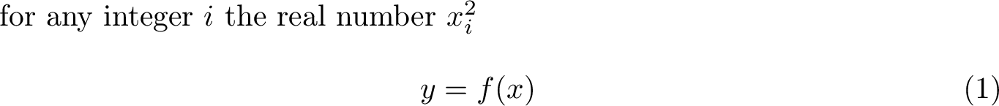
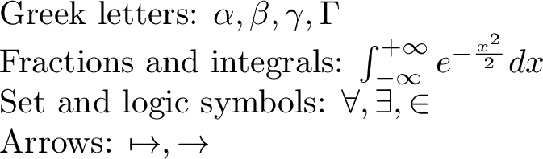
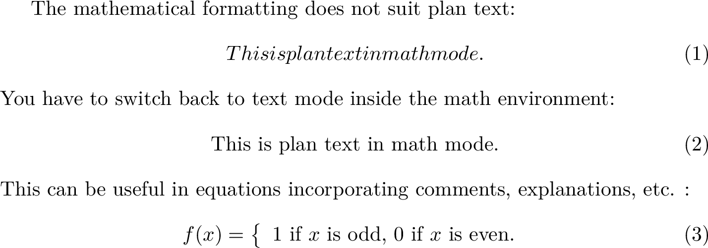
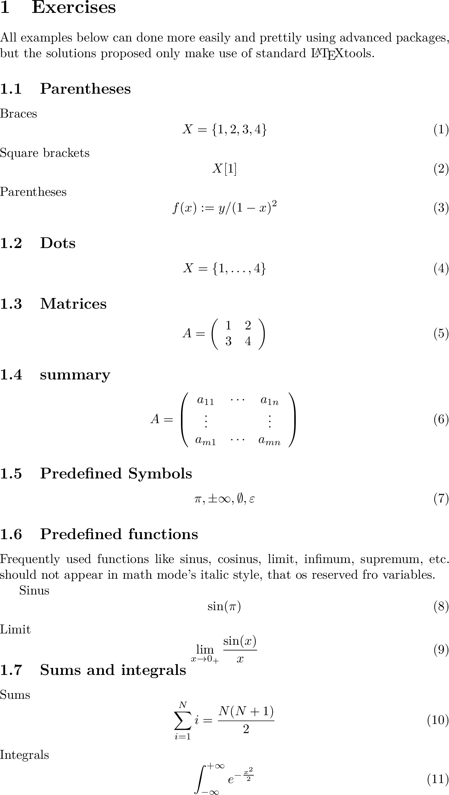

Maths
Overview
Teaching: 10 min
Exercises: 10 minQuestions
How to write equations with LaTeX?
Objectives
Discover the math environment
Write equations
As the rest of LaTeX, mathematics have their own environments, mostly two kinds of environments that allow you to make the distinction between textual and mathematical content. The way to write mathematical equations is a little bit different than text and will be described below.
Maths environments
Inline formulas insert mathematical symbols right into a sentence. In this case, LaTeX uses dollar signs ($some equation$) are used to delimit
mathematical content.
If an expression needs particular attention, as when displaying important steps or results, mathematical symbols can appear on their
own line using the equationenvironment, with this environment equations are numbered automatically, and can be referenced.
07-maths-01
Tex file : 07-maths-01.tex
%<-----> ADDED to minimal <----->
for any integer $i$ the real number $x_i^2$
\begin{equation}
y=f(x)
\end{equation}
Compilation : 07-maths-01.pdf

Both environment use the same way to write maths.
How to write math
A wealth of mathematical symbols and formatting commands are available in LaTeX. Some can readily be used with plain LaTeX, others are defined in specialized packages.
07-maths-02
Tex file : 07-maths-02.tex
%<-----> ADDED to minimal <----->
Greek letters: $\alpha, \beta, \gamma, \Gamma$
Fractions and integrals: $\int_{-\infty}^{+\infty} e^{ -\frac{x^2}{2}} dx$
Set and logic symbols: $\forall, \exists, \in$
Arrows: $\mapsto, \rightarrow$
Compilation : 07-maths-02.pdf

You can use Wikibook Latex Math to see all the possibilities.
Text in math mode
Writing text in math mode can be tricky as math mode removes the spacing between words:
07-maths-03
Tex file : 07-maths-03.tex
%<-----> ADDED to minimal <----->
The mathematical formatting does not suit plain text:
\begin{equation}
This is plain text in math mode.
\end{equation}
You have to switch back to text mode inside the math environment:
\begin{equation}
\textrm{This is plan text in math mode.}
\end{equation}
This can be useful in equations incorporating comments, explanations, etc. :
\begin{equation}
f(x) = \left\{ \begin{array}{l} \textrm{$1$ if $x$ is odd,} \\
\textrm{$0$ if $x$ is even.} \end{array}\right.
\end{equation}
Compilation : 07-maths-03.pdf

## Examples / Exercices
07-maths-examples
Tex file : 07-maths-examples.tex
\documentclass[a4paper]{article}
\usepackage[utf8]{inputenc}
\usepackage{lmodern}
\usepackage[english]{babel}
\usepackage{graphicx}
\begin{document}
\section{Exercises}
All examples below can done more easily and prettily using advanced packages, but the solutions proposed only make use of standard \LaTeX tools.
\subsection{Parentheses}
Braces
\begin{equation}
X = \{1,2,3,4\}
\end{equation}
Square brackets
\begin{equation}
X[1]
\end{equation}
Parentheses
\begin{equation}
f(x):= y / (1-x)^2
\end{equation}
\subsection{Dots}
\begin{equation}
X = \{1,\dots,4\}
\end{equation}
\subsection{Matrices}
\begin{equation}
A = \left( \begin{array}{cc} 1 & 2 \\ 3 & 4 \end{array} \right)
\end{equation}
\subsection{summary}
\begin{equation}
A = \left( \begin{array}{ccc} a_{11} & \cdots & a_{1n} \\ \vdots & & \vdots \\ a_{m1} & \cdots & a_{mn}\end{array} \right)
\end{equation}
\subsection{Predefined Symbols}
\begin{equation}
\pi, \pm\infty, \emptyset, \varepsilon
\end{equation}
\subsection{Predefined functions}
Frequently used functions like sinus, cosinus, limit, infimum, supremum, etc. should not appear in math mode's italic style, that os reserved fro variables.
Sinus
\begin{equation}
\sin(\pi)
\end{equation}
Limit
\begin{equation}
\lim_{x\rightarrow 0_{+}} \frac{\sin(x)}{x}
\end{equation}
\subsection{Sums and integrals}
Sums
\begin{equation}
\sum_{i=1}^{N}i = \frac{N(N+1)}{2}
\end{equation}
Integrals
\begin{equation}
\int_{-\infty}^{+\infty}e^{-\frac{x^2}{2}}
\end{equation}
\end{document}
Compilation : 07-maths-examples.pdf

Key Points
You can write equation within the text using the
$$or within a separate space using theequationenvironment